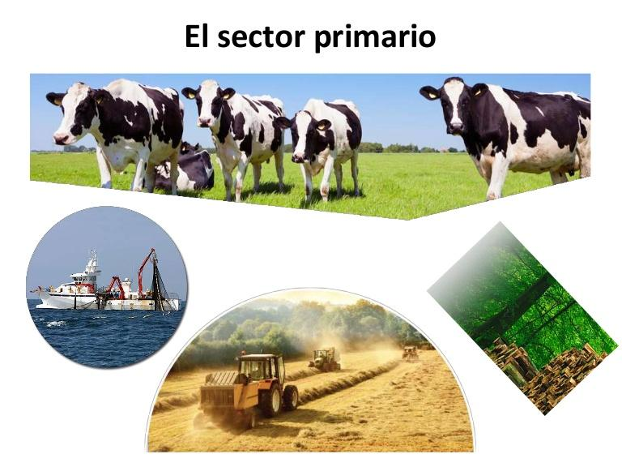

Definición

El sector primario marca el comienzo de la cadena productiva. Está formado por todas aquellas actividades que se encargan de la extracción de materias primas de la naturaleza. Estas se destinan al consumo humano directo o a su transformación por parte del sector secundario. Las materias primas pueden ser empleadas para el consumo directo o usadas por otros sectores económicos para la producción de bienes y servicios. Las actividades primarias fueron desarrolladas por el ser humano desde la prehistoria y son fundamentales para abastecer de alimentos y recursos a la población mundial. Debido a que no existe elaboración del producto (solamente la recolección desde el medio natural que lo proporciona), las actividades primarias suelen ser la base de la economía de los países en desarrollo.